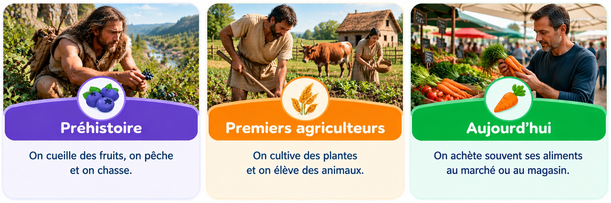

Comparer l’alimentation à différentes époques
Comment se nourrissait-on autrefois ?
Je découvre
Observe ces trois façons de se nourrir. Les humains ont-ils toujours trouvé leurs aliments de la même manière ?

Qu'est-ce qui change entre la cueillette, les cultures et le magasin ?
Je comprends
À la Préhistoire, certains groupes humains vivent de chasse, de pêche et de cueillette. Plus tard, des populations commencent à cultiver des céréales et à élever des animaux.
Aujourd’hui, des agriculteurs produisent toujours une grande partie de notre nourriture. Mais beaucoup de personnes l’achètent dans des commerces.
Attention : il existe encore aujourd’hui différentes façons de se nourrir selon les lieux et les familles.
Leçon — À retenir
Se nourrir au fil du temps
AutrefoisChasser, pêcher, cueillir
Plus tardCultiver et élever
Aujourd’huiProduire et acheter des aliments
Les façons de se nourrir ont changé au cours du temps, mais nous avons toujours besoin de manger.